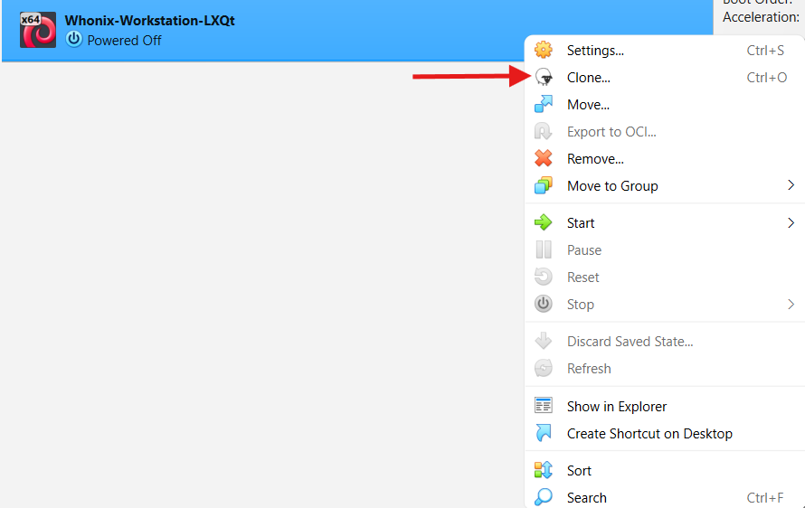
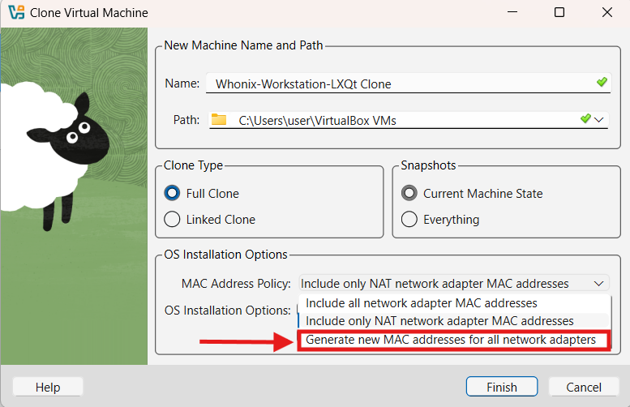
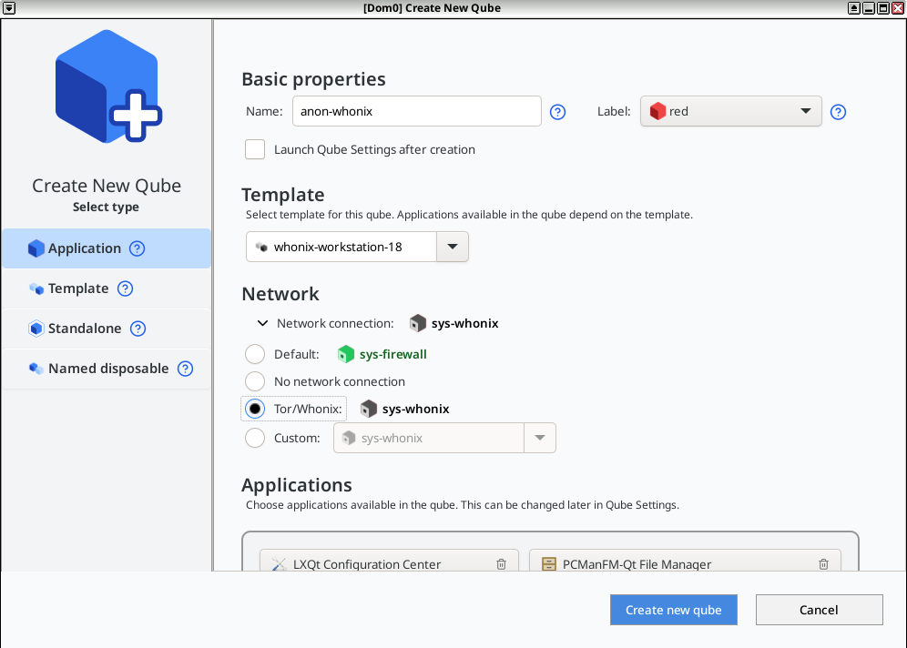

We believe security software like Whonix needs to remain Open Source and independent. Would you help sustain and grow the project? Learn more about our 14 year success story and maybe DONATE!
Whonix-Workstation Security HardeningDocumentationHostnamesPrevious page: Whonix-Workstation Security HardeningIndex page: DocumentationNext page: HostnamesMultiple Whonix-Workstation™

Compartmentalization. Better separation of different tasks and/or pseudonyms by using multiple Whonix-Workstation.
Introduction
Whonix is a secure operating system consisting of two virtual
machines which are isolated both from each other and the host. This
configuration averts many threats posed by malware, misbehaving
applications and user error. While Whonix protects against many real
world threats, [1] it is still possible for skilled
adversaries to compromise Whonix-Workstation (Qubes-Whonix: anon-whonix).
If a single Whonix-Workstation is used for all anonymous activities and is exploited, the attacker gains access to available data and can monitor all online activity. To minimize the impact of a compromise, it is recommended to utilize multiple Whonix-Workstation to compartmentalize different identities and/or additional software. Depending on individual preferences and requirements, a second, third ... nth Whonix-Workstation VM can be created.
Multiple Whonix-Workstation Rationale
Different Torified clients can be used in a completely isolated manner with multiple Whonix-Workstation. By compartmentalizing each identity or client, an attacker can only read the data in the compromised VM. For example, if Tor Browser in VM-1 was compromised it could not read a user's IRC identity in VM-2. [2]
One disadvantage of this configuration is that if the host Internet
connection goes offline or Tor on Whonix-Gateway
(sys-whonix) suddenly fails, then all Whonix-Workstation
will go offline simultaneously. If multiple Tor clients were running and
abruptly stop in unison, a network observer could link these activities
to the same identity (pseudonym). For instance, a strong correlation is
formed if two Tor users in one chat channel go offline at exactly the
same time.
Qubes-Whonix vs Non-Qubes-Whonix
Qubes-Whonix is the recommended choice for multiple Whonix-Workstation because it is specifically designed for compartmentalization (a.k.a. sandboxing) of multiple running VMs. This provides significant speed and security advantages relative to the traditional Type 2 hypervisor model, where two (or more) Whonix VMs are run inside programs like VirtualBox on top of the host OS. For further information, see: Type 1 vs Type 2 Hypervisors and Why use Qubes over other Virtualizers?
Qubes-Whonix also has a TemplateBased filesystem which saves time and improves usability compared to Non-Qubes-Whonix:
- Centralized Updates: App Qubes are based on the corresponding Template's root filesystem. After updating the Template, those same updates will be reflected in the root filesystem of every App Qube. Non-Qubes-Whonix users must spend more time updating each VM individually.
- Minimal Disk Usage: App Qubes require far less disk space
than traditional VMs since the App Qube's root filesystem is based on
the corresponding template. The App Qube only requires enough disk space
to hold user files in the
/homedirectory. - VM Management: Cloning VMs is a simple two-step process which can be done in Qube Manager. Non-Qubes-Whonix requires a multi-step process to clone and configure each VM.
Safety Precautions
- Group Workstations per Activity Group: Use separate
Whonix-Workstations for each distinct pseudonym or activity group. This
helps to maintain separation between different identities or activities.
See Only Use One Online Pseudonym at the Same Time for
details. For example:
- Whonix-Workstation for pseudonym Alice - browsing activities
- Whonix-Workstation for pseudonym Alice - e-mail communications
- Whonix-Workstation for pseudonym Bob - browsing activities
- Whonix-Workstation for pseudonym Bob - chat communications
- Side-Channel Risks: If a single Whonix-Workstation
is compromised, it could perform various side-channel attacks to learn
about running processes in other VMs.
- Compromise Scenario: A compromised Whonix-Workstation could exploit side channels to gather data about other VMs.
- Mitigation Limitations: Some side-channel attacks cannot be completely prevented.
- Pseudonym Correlation: Adversaries might be able to link multiple Whonix-Workstation to the same pseudonym based on user activity.
- Single Pseudonym Rule: Shut down all Whonix-Workstation associated with one pseudonym such as (Alice) before switching to another pseudonym (Bob).
Cross-VM Attack Vectors
Category |
Description |
|---|---|
- scope="row" | Attacks via the shared bridge |
Multiple workstation VMs are all connected to the gateway using the same virtual bridge; they share an IP subnet. A variety of attacks permit devices sharing a bridge to view or steal one another's traffic, or to impersonate one another at the IP layer. The exact attacks available depend on the specific bridge implementation, but some are always available. At a minimum, VMs sharing a bridge can always trivially detect one another, and determine one another's local IP addresses on the bridge, simply by watching broadcast traffic like ARP and IPv6 neighbor discovery. The snooping and impersonation vulnerabilities are particularly dangerous because the communication between the Tor process running on the gateway and the client programs running on the workstation is neither encrypted nor cryptographically authenticated. Connections are made either using the (cleartext) SOCKS5 protocol or using Tor's transparent connection proxying feature. Even if the actual application data are encrypted, DNS lookups and circuit creation data are always sent in the clear. A workstation VM that intercepts another workstation's bridge traffic is in a position to know the destinations of all outgoing connections over Tor from that other workstation, as well as the timing and volume of traffic sent over each such connection. It may also be possible to intercept Tor control traffic generated by the "new identity" button. If the user sends cleartext data at the actual application layer, then hostile VMs are in a position to steal those data as well. In effect, none of the workstation VMs receives Tor's core protections with respect to the other workstation VMs. Although many things in each workstation may be protected against the other workstations, for Tor purposes all of the VMs effectively share the same compartment. This could be mitigated by providing each workstation VM with a separate virtual bridge and a separate virtual interface on the gateway VM. The gateway configuration should also be reviewed to make sure that the gateway isn't routing unnecessary traffic between the workstations at the IP layer. For a potential remedy see Connections between Whonix-Gateway and Whonix-Workstation. |
Distributed Denial of Service (DDOS) Attack |
An adversary that managed to compromise a VM with malware could stress any system such as CPU, GPU, HDD, RAM, network connection and other Whonix-Workstation. If a Distributed Denial of Service (DDOS) Attack is launched from an infected Whonix VM, then:
|
Local VM Fingerprinting |
See VM Fingerprinting. |
Exploits against other Whonix-Gateway [4] |
Following infection, an adversary could try to exploit the Whonix-Gateway. |
Exploits against other Whonix-Workstation |
Following infection, an adversary could try to exploit other Whonix-Workstation:
|
Identity Correlation through Circuit Sharing |
When different applications use the same Tor circuit and exit relay, these activities can be linked to the same pseudonym (see Stream Isolation for further details):
|
Impersonation |
Multiple Whonix-Workstation are supposed to have different internal IPs configured. Once a VM is compromised by malware it could attempt to impersonate another VM by taking its internal IP.
|
How-to: Use more than One Whonix-Workstation - Easy
Platform specific. Select your platform.
Non-Qubes-Whonix
 Note: The following instructions only apply to
Download/Default-Whonix-Workstation or Whonix VMs built from source
code. To use another operating system like Windows, other GNU/Linux, BSD
etc. please see the Other Operating Systems chapter instead.
Note: The following instructions only apply to
Download/Default-Whonix-Workstation or Whonix VMs built from source
code. To use another operating system like Windows, other GNU/Linux, BSD
etc. please see the Other Operating Systems chapter instead.
 Each additional Whonix-Workstation VM must have its own MAC
address and internal LAN IP address.
Each additional Whonix-Workstation VM must have its own MAC
address and internal LAN IP address.
1 Clone a fresh VM:
Make a copy of a clean Whonix-Workstation VM, so you start from a known good state.
- VirtualBox: In VirtualBox Manager, clone a clean Whonix-Workstation.

- KVM: In Virtual Machine Manager, clone a clean
Whonix-Workstation:
Highlight Whonix-Workstation→Open→Virtual Machine→Clone
2 Assign a new MAC address:
This avoids two VMs having the same network identity, which can cause network conflicts.
 Note: A new MAC address is necessary if an additional
VirtualBox VM is imported.
Note: A new MAC address is necessary if an additional
VirtualBox VM is imported.

- KVM: To change the internal network in KVM, see: Creating Multiple Internal Networks.
3 Sysmaint Notice

- A
If using
user-sysmaint-split: The user must boot into the sysmaint session. For details and instructions on how to do so, see user-sysmaint-split. - B
If using
 unrestricted admin mode: This sysmaint notice does not apply.
Continue with the steps below.
unrestricted admin mode: This sysmaint notice does not apply.
Continue with the steps below.
4 Edit the network interfaces file:
Change the internal LAN IP address, so the cloned VM does not reuse the same IP as the original VM.
sudoedit /etc/network/interfaces.d/30_non-qubes-whonix
Ignore all lines starting with a hashtag ("#"). That is
because comments are only for documentation and notes. However, comments
are ignored by the system.
Look for the line address 10.152.152.11. Change the last
octet. For example, change
10.152.152.11 to
10.152.152.12.
Next, look for the line address fd19:c33d:88bc::11.
Change the last number in the address. For example, change
fd19:c33d:88bc::11 to
fd19:c33d:88bc::12.
Save and exit.
5 Review your changes:
This is optional, but it helps confirm the file looks correct and shows the contents without comment lines.
cat /etc/network/interfaces.d/30_non-qubes-whonix | grep --invert-match "#"
That should show for example:
auto lo
iface lo inet loopback
auto eth0
iface eth0 inet static
address 10.152.152.12
netmask 255.255.192.0
gateway 10.152.152.10
...
iface eth0 inet6 static
address fd19:c33d:88bc::12
gateway fd19:c33d:88bc::10
netmask 96When using more than 1 additional Whonix-Workstation,
10.152.152.12 and fd19:c33d:88bc::12 should be
changed to 10.152.152.13 and
fd19:c33d:88bc::13 respectively. Use 14 for a
fourth workstation, and so forth.
6 Reboot or restart networking:
Apply the new IP settings by rebooting, or by restarting networking.
Reboot the Whonix-Workstation or alternately restart the network.
sudo service networking restart
7 Done.
The additional Whonix-Workstation VM should now have a unique MAC address and a unique internal LAN IP address.
Qubes-Whonix
1 Create a new App Qube:
Create an additional App Qube based on the Whonix-Workstation
Template (whonix-workstation-18) and give it a distinctive
name such as for example anon-whonix-2.
(A more distinctive name is desirable.)
2 Confirm the net qube:
Make sure the new Whonix-Workstation App Qube is using a
Whonix-Gateway (such as for example the default sys-whonix)
as its net qube.
If creating a new App Qube is unfamiliar, follow these step-by-step instructions:
Figure: App Qube Creation using Qubes VM Manager (QVMM)

1 Create Qubes-Whonix-Workstation App Qube:
Create Qubes-Whonix-Workstation App Qube.
2 Name and label:
Name the App Qube. Don't include any personal information (if the App
Qube is compromised, the attacker could run
qubesdb-read /name to reveal the VM name). Name the App
Qube something generic, for example:
anon-whonix-2.
3 Choose a color label:
Choose a color label for the Whonix-Workstation App Qube.
4 Select the template:
Use the Whonix-Workstation Template. For example:
whonix-workstation-18.
6 Set the type:
Keep it on Application which is the default.
7 Network:
Choose the desired Whonix-Gateway ProxyVM from the list. For example:
sys-whonix.
8 Confirm:
Press: Create new qube.
9 Open a dom0 terminal:
You will run a qvm-tags command in
dom0.
10 Add the anon-vm tag:
Add qvm-tag anon-vm, sdwdate-gui-client to
the newly created App Qube. [6]
Note: Replace anon-whonix-2
with the actual name of the VM.
qvm-tags anon-whonix-2 add anon-vm sdwdate-gui-client
11 Done.
3 Choose the gateway scenario:
Depending on the net qube setting.
Select an option.
If you are using the default sys-whonix as gateway
If the Whonix-Workstation App Qube is connected to
sys-whonix: No special instructions required.If you are using a gateway other than sys-whonix
If the Whonix-Workstation App Qube is connected to any
Whonix-Gateway other than sys-whonix, apply the
following instructions:
The other gateway should be set up according to the instructions on the Multiple Whonix-Gateway wiki page.
Note: Inside the Whonix-Workstation App Qube.
1 Create the config folder:
Create folder /usr/local/etc/sdwdate-gui.d.
sudo mkdir -p /usr/local/etc/sdwdate-gui.d
2 Open the config file:
Open with root rights.
sudoedit /usr/local/etc/sdwdate-gui.d/50_user.conf
3 Add the gateway setting:
Add the following text.
Note: The following example uses
sys-whonix-2 as an example. Replace
sys-whonix-2 with the name of the VM of
Whonix-Gateway which this Whonix-Workstation App Qube uses as its
net qube. For example,
sys-whonix-3.
gateway="sys-whonix-2"
4 Save the file:
Save the file.
5 Restart the VM:
Restart the VM. [7]
6 If there are issues:
sdwdate-gui qrexec denied messages? See Qubes-Whonix troubleshooting, sdwdate-gui qrexec.
4 Done:
The process of setting up an additional Whonix-Workstation App Qube has been completed.
How-to: Use more than one Whonix-Workstation - More Security
Platform-specific. Select your platform.
See Also
Footnotes
- See: Protection Against Real World Attacks.
- Without using an additional exploit to successfully break out of the infected VM, which is a difficult task.
- By default, App Qubes that are behind the same
net qubeare prevented from connecting to each other in Qubes. - To minimize the threat of exploits it is recommended to apply relevant instructions found in the System Hardening Checklist.
- Since IsolateClientAddr is the Tor default.
- Developer
documentation about
qvm-tags - Or restart sdwdate-watcher (sdwdate-gui). killall sdwdate-watcher /usr/libexec/sdwdate-gui/start-maybe
Categories: Documentation